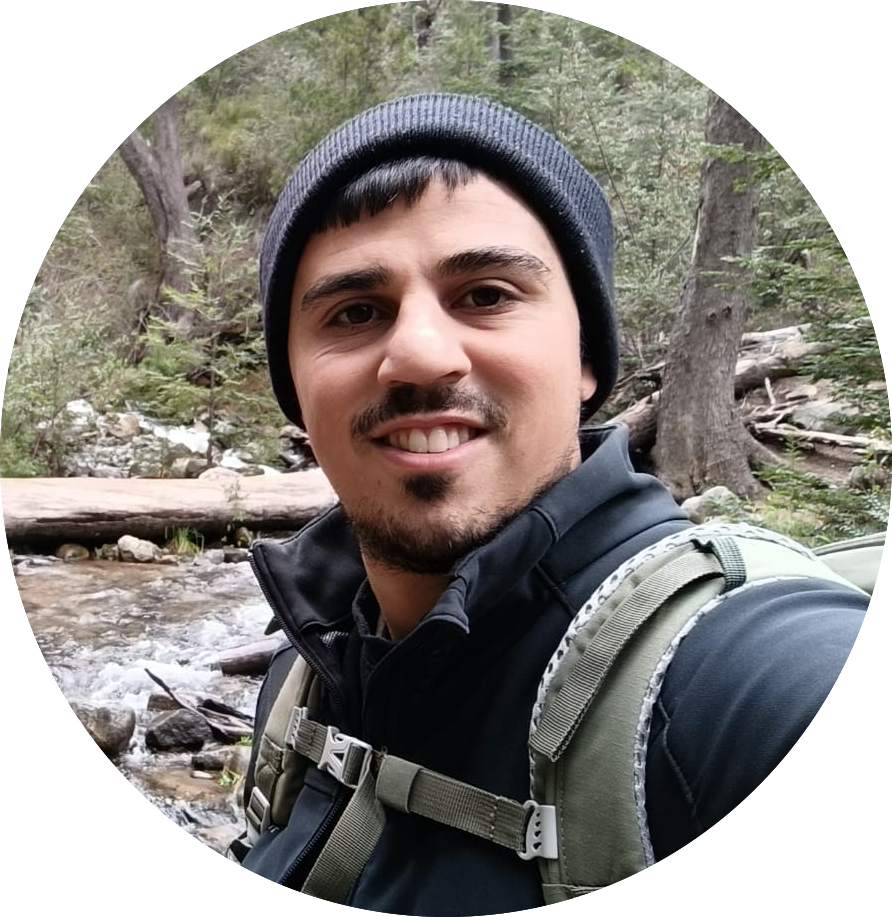
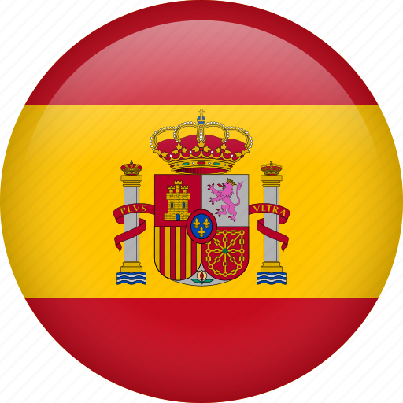
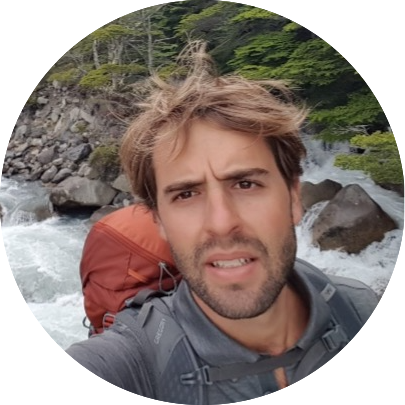

🗺️ All Stories
Add to ❤️
 Fitzroy,
Argentina
Fitzroy,
Argentina
 Amit Eilam
Amit Eilam
Depending on how much time you have: if you do Backpacking in
South America the long-distance bus is the cheapest but slowest
option, via plane it's much faster.
The nearest airport is located in El Calafate which offers direct
flight connections to Buenos Aires regularly – Aerolíneas
Argentinas has usually the best deals traveling within Argentina.
From El Calafate you can go by bus to El Chalten in about 2,5h.
But: use the time in Calafate to withdraw money as you'll find
only 2 ATMs in El Chalten which often run out of money in peak
season.
The best time for trekking in El Chalten is in summer – the season
starts in October and lasts until April. Before and after the
season most hostels/hotels and restaurants are closed.
You should definitely stay in the relaxed village of El Chaltén
rather than the busy and more touristy El Calafate. Though the
Internet connection is bad and most Hostels don't offer breakfast
it is much more enjoyable and you're right at the starting point
for all treks.
I stayed at the Hostel Aylen Aike on my first visit and highly
recommend it for budget travelers as the owner is awesome and
loves helping you out in planning and organizing your treks or
even climbs – the hostel offers small and big dorms and is nicely
located.
During my last visit I stayed at Lo de Guille, a family run B&B
(one of the few places in El Chaltén which offers a basic
breakfast). Very friendly staff & affordable prices, comes with a
locked storage room (to use when you are trekking) and a kitchen
for everyone to use.
In case the Aylen Aike or Lo de Guille is booked out for your
dates make sure to check out the other Hostels listed on
Hostelworld or have a look at the El Chaltén overview page on
Booking for other options such as B&B's and Hotels. I highly
recommend booking in advance as spaces fill up quickly during the
hiking season!
This is an easy day hike where you don't have to be an experience
hiker – take some sunscreen, water and food. After around 3h
you'll be at the Laguna Torre.
The starting point is located south-west of El Chalten next to the
river Rio Fitz Roy. The trail is well marked and ascends smoothly
from El Chaltén.
After around 1h you'll arrive at the viewpoint “Mirador Torre”
form where you are able to see the towers for the first time.
Follow the trail downhill and through flat terrain following the
signs “Laguna Torre” until you arrive at the lagoon.
You made it – enjoy the view! From here you have 2 possibilities
to get closer to the glacier: left across the gravel or right to
the viewpoint “Mirador Meastri”.
The most beautiful trail gets you close to the Monte Fitz Roy, the
destination is called “Laguna de los Tres”. You should start at
dawn in El Chalten to avoid the day tourists from Calafate. Be
prepared as the trail is pretty tough at the end!
The starting point can be found in the north-west of El Chalten
and is hard to miss (big signs). From there the only way is up,
after 1h you reach the viewpoint “Mirador Fitz Roy” (left hand
side). Continue after a little break and follow the signs to the
Camp “Poincenot”.
After a flat section you'll arrive at the camp which you have to
cross – then you cross some small rivers and get to the final and
steepest part (use the chance to fill your water bottle at the
river). Follow the steep trail over huge rocks up to the
lagoon.
Isn't it beautiful up here? Enjoy the view and use the chance to
go to the small hill left hand side of the “Laguna de los Tres” to
see another lagoon: the “Laguna Sucia”!
Due to the well marked hiking trails you can easily connect both
treks to a multi-day itinerary with camping.
Day 1: Follow the instruction in 4) and leave your equipment at
the Camp Poincenot before heading up to Laguna de los Tres, enjoy
your day up there and spend the night at the camp.
Day 2: Take it easy in the morning and head in the direction of El
Chalten, shortly afterwards you'll get to a junction which you
have to follow right to “Laguna Torre”. The distance to Laguna
Torre is about 7km, easy doable in around 2h – the trail leads you
through flat terrain passing Laguna Madre, Laguna Hija and Laguna
Nieta. At the next big junction you keep right and arrive at
Laguna Torre at lunch.
If you want you can extend for a 3rd day by camping at the nearby
Camp “De Agostini” – or you head back to El Chalten (3h).
Add to ❤️
Huayhuash,
Peru
 Alon Efrati
Day 1: Huaraz - Llámac - Cuartelwain 4170 m
At
indicated time, pick up in the hotel and transfer to Cuartelwain
4150 m / 13 615 ft, we arrive there after of 5 hours. This will be
our first camp.
Day 2: Cuartelwain – Qaqanan pass 4700 m - Mitucocha 4230m
After breakfast, we start walk up to Qaqanan pass 4700
m / 15 419 ft, we get to the pass after of 3 hours; then we go
down to the East side of Cordillera Huayhuash, after to have
walked 2 hours more we get to the next campsite on the shores of
Mitucocha lake 4250 m / 13 944 ft; below of Hirishanca and Rondoy
mounts.
Day 3: Mitucocha - Carhuac pass 4650 m -
Carhuacocha 4138 m
At indicated time we take the trail
to Carhuac pass 4650 m / 15 256 ft. where we get after of 2.5
hours, from this pass we have a nice view of Yerupaja chico,
Yerupaja and Siula mounts; then we walk down 2 hours more to get
to Carhuacocha lake 4150 m / 13 615 ft, where we set up our tents
on its shores.
Day 4: Carhuacocha - Siula pass 4850 m -
Huayhuash 4330 m
This day we depart early for Siula pass 4850 m / 15912 ft, we walk
along the shores of Carhuacocha lake, on the way we visit Three
lakes (Qanrajancacocha, Siulacocha and Quesillococha), we always
will have the view of Hirishanca chico, Yerupaja and Siula mounts;
after of 4 hours we reach the pass, from this point we have a
panorama of the most snow covered peaks of East side of Cordillera
Huayhuash specially of Siula mountain. After resting and having
taken the photos we walk down to Huayhuash campsite 4300m / 14 108
ft, where arrive after of 3 hours more.
Day 5:
Huayhuash – Portachuelo pass 4750 m - Viconga 4400 m
At
indicated time after breakfast we depart for Portachuelo pass 4750
m / 15 584 ft, we get to the pass after of 2 hours, this pass is
the boundary between the Cordillera Huayhuash and the Cordillera
Raura; from the oass we walk down among Ichus (grass plant that
lives over 4000 m / 13 123 ft in the Andes), on the way is
possible to see llamas and alpacas (Andean camels); we pass near
to Viconga lake and we get to our campsite after of 2 hours more,
our campsite will be located at 4400 m / 14 436 ft, near to the
hot springs.
Day 6: Viconga - Cuyoc pass 5000 m -
Guanacpatay (Elefante pampa) 4450 m
We head to the
highest pass, Cuyoc 5000 m / 16 4040 ft, we get there after of 3
hours, this pass is located between Cuyoc and Pumarinri mounts,
from this point we have nice views of Cordillera Raura and part of
Cordillera Huayhuash too. From the pass we descend to Guanacpatay
valley and we set our campsite at 4400 m / 14 436 ft, after to
have walked down around 1.5 hours.
Day 7: Guanacpatay –
San Antonio Pass 4990 m – Cutatambo 4250 m
After
breakfast we depart for San Antonio, a viewpoint located at 5000 m
/ 16 404 ft, we get to that point after of 2.5 hours, this point
is unique, because from there we have the nicest views of
Carnicero, Jurao, Siula Grande and Yerupaja mounts as well as
Jurao and Siulacocha lakes. After resting and having taken the
photos, we go down to Cutatambo valley 4250m / 13 944 ft, our next
campsite where we get there after of 2 hours more.
Day
8: Cutatambo, visit the base camp and glaciar of Siula Grande
mount, route of Joe Simpson.
This day we depart for
Gran Vista viewpoint 5000 m / 16 404 ft; on the way we visit the
base camp and glacier of Siula Grande mount, made famous by Joe
Sympson in his book “Touching the void”, and later made into a
film with the same name; we get to the viewpoint in 4 hours
walking, after to have seen very close the famous mountain, walked
around the lake near to the glacier and having taken the photos we
return for the same path to the campsite.
Day 9:
Cutatambo - Huayllapa 3500 m
At indicated time after
breakfast we depart for Huayllapa village 3500 m / 11 483 ft, we
take the path near to the river and walk down for around 3.5 hours
through the valley of the same name among native trees and shrubs
of the region, getting in Huayllapa we can get some sodas and
beers.
Add to ❤️

Camino de
Santiago, Spain
 Lior Tamir
DAY 1: PAMPLONA, SPAIN
Arrive at Pamplona Airport
(PNA) and transfer to our historic hotel, once a haunt of Ernest
Hemingway. After an orientation, set out on a walk through the old
city and the streets made famous by the running of the bulls. Meet
up for a welcome dinner tonight.
DAY 2:
LOGROÑO/NAVARRETE
Descend out of the foothills of the
Pyrenees to La Rioja, one of Spain’s most celebrated wine regions,
and set off along El Camino, walking through vineyards to the
village of Navarrete. In the afternoon, visit the Yuso and Suso
monasteries of San Millán de la Cogolla, a World Heritage site
considered the birthplace of the Spanish language. Stop for a wine
tasting at a local bodega before settling in to our hotel. (8
miles hiking, 4 hours).
DAY 3: ATAPUERCA/BURGOS
Today’s
route rises onto the Meseta Central, high plains that stretch
across much of central Spain. Pick up the trail in Atapuerca and
head towards Burgos. Walk into the center of the ninth-century
city, a former capital of the kingdom of Castile and home to the
Spanish national hero El Cid. Take a guided tour of the old town
and its 13th-century Gothic cathedral, a World Heritage site.
(12–13 miles hiking, 5–6 hours).
DAY 4:
FROMISTA/CARRIÓN DE LOS CONDES
Transfer to Fromista,
then continue across the Meseta, rambling through the endless
green and gold fields of the Tierra de Campos. This land is filled
with the history of La Reconquista, when Christian kingdoms
succeeded in retaking areas of the Iberian Peninsula controlled by
Moors. Arrive in the town of Carrión de los Condes, and stay the
night in a historic monastery. (11 miles, 5 hours hiking).
DAY
5: SAHAGÚN/BERCIANOS DEL CAMINO/LEÓN
Start off from the
medieval city of Sahagún and head west to the village of Bercianos
del Real Camino. Drive on to León for lunch and spend the
afternoon discovering the city’s historic sites, including a
guided visit through its remarkable cathedral, filled with more
than a hundred stained glass windows. Enjoy dinner on your own
this evening, and spend the night in a spectacular Renaissance
convent. (5–6 miles hiking, 3 hours).
Add to ❤️
Golan
Trail, Israel
Lior Tamir
The Golan Trail is a marked path that stretches for 120 kilometers
with breathtaking scenery. Hikers on the Golan Trail can see views
of Mt. Hermon and Lake Kinneret, volcanos and reservoirs,
wildflowers and archaeological sites. The trail begins in the
north on Mt. Hermon, and ends with a view of Lake Kinneret in the
south; the path is marked with blue, white and green stripes. The
Golan Trail has become a popular “pilgrimage hike” in recent
years.
The recommended season for hiking the trail is spring, especially
the months of March and April. At this time of year, the Golan is
“painted” green, and wildflower blooming is at its peak. The
southern segments of the Golan Trail can be hiked in the winter
(from October to February), too. Since this area is about 300-400
meters above sea level, the winters are relatively mild (except
for rainy days). The northern segments can be hiked in May,
throughout the summer, and again in September. Most of the
northern segments are at a height of 1,000 meters above sea level,
and the summers are relatively mild; many of the segments are
heavily shaded.
The Golan Trail is divided into 15
segments of different lengths, all between 6 and 11 kilometers per
segment. Each segment has a starting and ending point that is
accessible by car; if there are two cars, one can be left at the
end for convenience.
People still hitchhike safely in
the Golan, but there is also public transportation that can help
hikers at the beginning and ending of most trails.
Each
segment can be hiked in a day or less, and the difficulty level is
usually easy-to-intermediate. Advanced hikers can finish two
segments per day (we don’t recommend hiking any more than two
segments at a time).
For those hiking “with their homes
on their backs”, the Golan Trail usually takes about 7-9 days to
finish; there are free camping sites along the way. But the Golan
also offers many diverse kinds of lodgings: one can stay at a paid
campsite with minimum creature comforts, or one can stay at a
fancy B and B; both options can be found relatively near the
trail.
For those hiking the Golan Trail, one must have
an updated version of Trail Map #1 (the map with the official
trails marked clearly), which is updated from time to time.
Another possibility is to have an app on your smartphone that
includes the same trail markings and information that are on the
physical map.
While hiking in the Golan, it is
absolutely forbidden to cross fences or go off the marked trail;
in a number of places, the trail is not far from well-signed
minefields (which are all marked on official maps and apps).